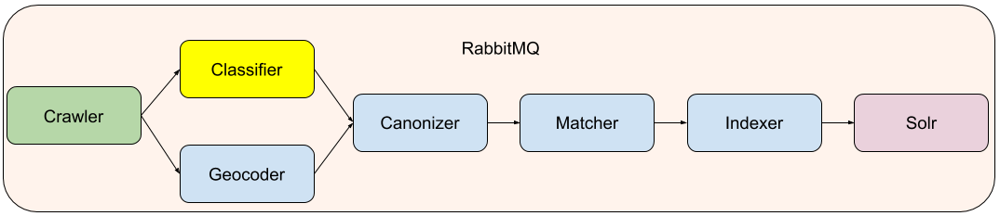
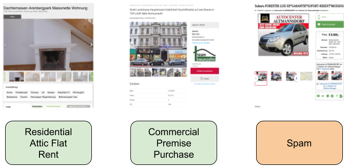
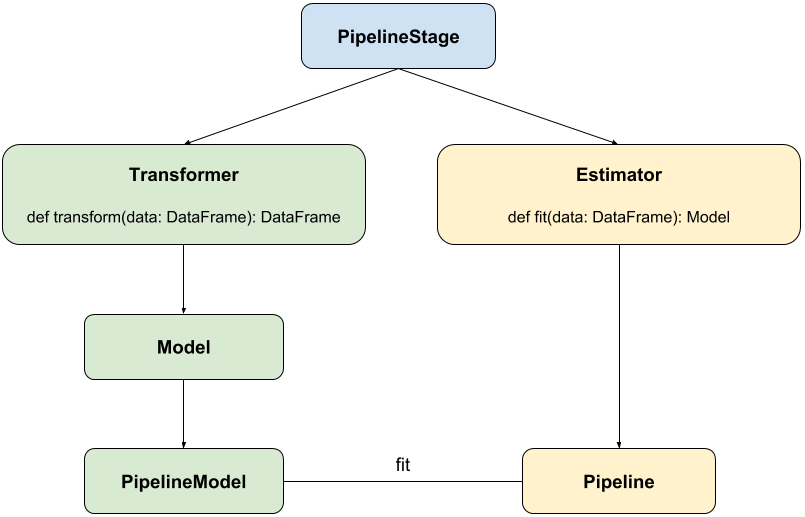
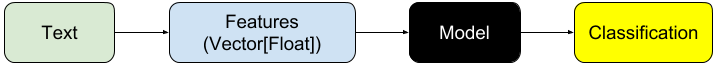
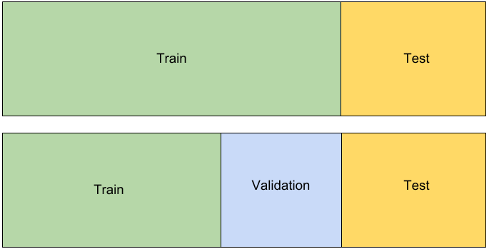

Spark ML Meets Real Estate
Who am I?
Matthias Langer (m.langer798@gmail.com)
 mlangc on
mlangc on

The Problem at Hand
Crawling Pipeline
Classification Problem
The Classes
| PropertyType | 3 | Residential, Commercial, Misc |
| PropertySubType | 15 | Apartment, AtticFlat, Lot, SingleFamilyHouse, Villa, Premise, Office, Store, Garage, ... |
| ListingCategory | 2 | Lease, Purchase |
Classifier App
- Mechanical Turk was not an option
- Uses reverse proxy and some custom hacks to make HTML look good
- Non trivial development effort of its own
- Stored in Postgres
Labeled Examples
- Total: ~48000 (~38000 for training, ~10000 for test)
- 42 different labels
- Majority class: ~19% (Residential, Apartment, Purchase)
- Spam: ~6%
- Set is fairly unbalanced: <0.01% (Garage, Purchase, Lease)
Baselines accuracies
- Random classifier: 2.5%
- Majority classifier: 19%
- Human: 92.5% - 96%
Probably should have used tags
Implementation Details
To Spark or not to Spark
Spark Mlib vs. ML
RDDs vs DataFrames and DataSet
Bird Eyes View on Spark ML
How this looks in Spark
Classical ML classification pipeline
Based on Bag of N-Grams
The cat ate the dog:
'the' -> 2, 'the dog' -> 1, 'ate the' -> 1, 'the cat' -> 1, 'dog' -> 1, 'dog ate' -> 1, 'ate' -> 1, 'cat' -> 1
Unit Extraction
This flat is 45 m² and costs 350.000 €
this flat is sqm::Interval(25.0,50.0) and costs euros::Interval(250000.0,500000.0)
Synonym Normalization
Dg-Wohnung ==> syn::DgWohnung
Dachgeschosswohnung ==> syn::DgWohnung
Dachgeschossmaisonette ==> syn::DgWohnung
Dachgetagenwohnung ==> syn::DgWohnung
Stemming and Splitting
Küche ==> kuch
Küchen ==> kuch
Haus ==> haus
Häuser ==> haus
Dachgeschosstraum ==> dachgeschosstraum dach geschoß traum
Accuracies Total
| r. t. | syns | clean | ngr. | acc |
| yes | yes | yes | 1 | 89.2% |
| yes | yes | no | 2 | 89.4% |
| no | yes | yes | 2 | 89.8% |
| yes | no | yes | 2 | 89.8% |
| yes | yes | yes | 3 | 90.0% |
| yes | yes | yes | 2 | 90.1% |
Errors Lease/Purchase
| r. t. | syns | clean | ngr. | err |
| yes | yes | yes | 1 | 0.46% |
| yes | yes | no | 2 | 0.39% |
| no | yes | yes | 2 | 0.49% |
| yes | no | yes | 2 | 0.36% |
| yes | yes | yes | 3 | 0.34% |
| yes | yes | yes | 2 | 0.36% |
Train-Validation-Test Split
Feature Tuning
Hyper Parameter Tuning
Hyper Params Are Relevant
| L/P Err. | Total Acc. | Total Err. | |
| Defaults | 0.075% | 87.0% | 13.0% |
| Tuned | 0.036% | 90.1% | 9.9% |
Choosing between different Algorithms